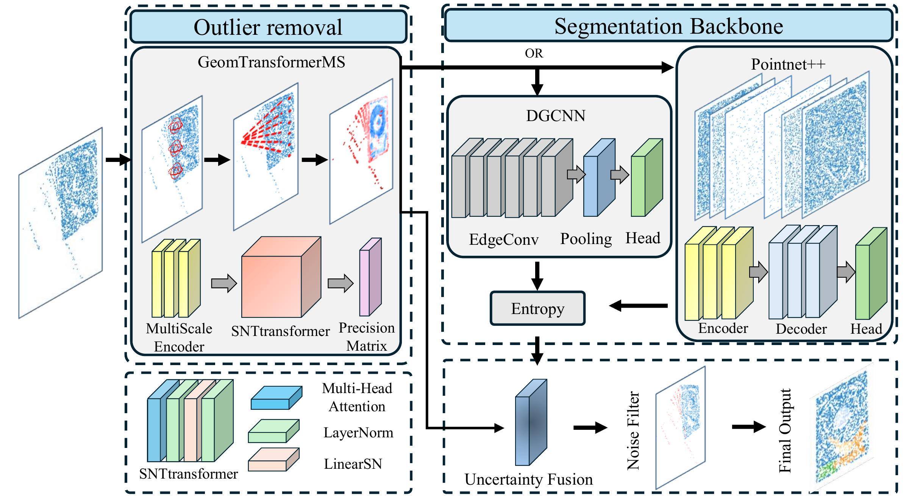
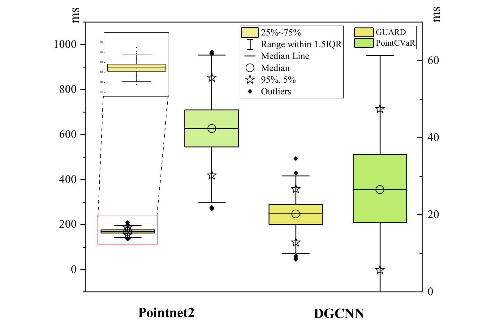
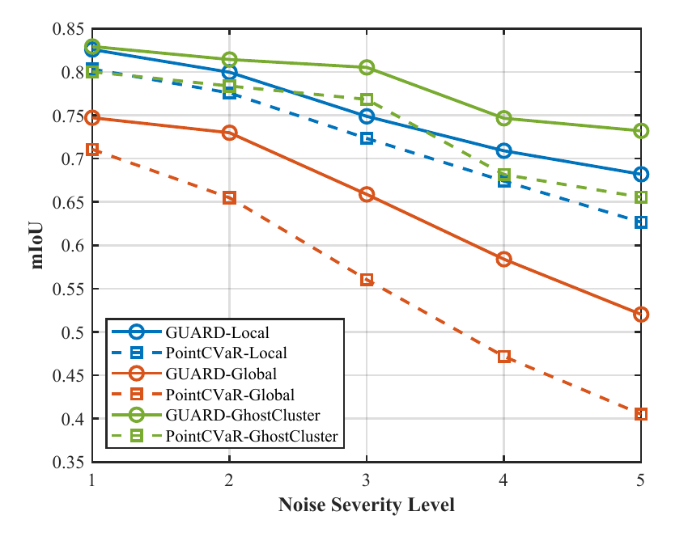
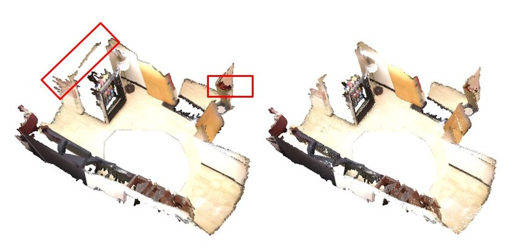
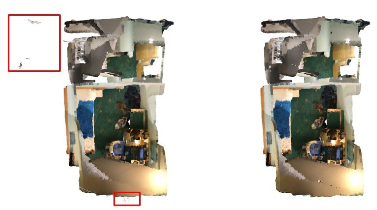
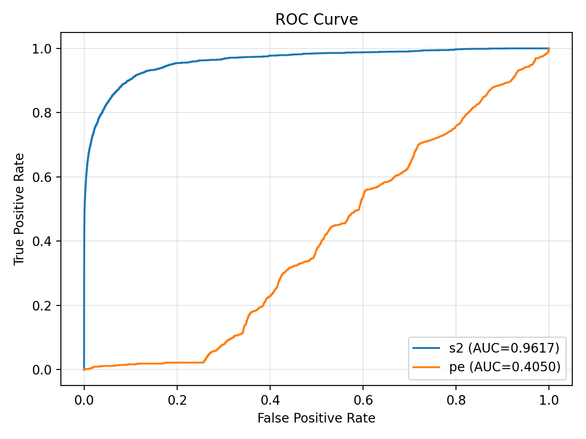
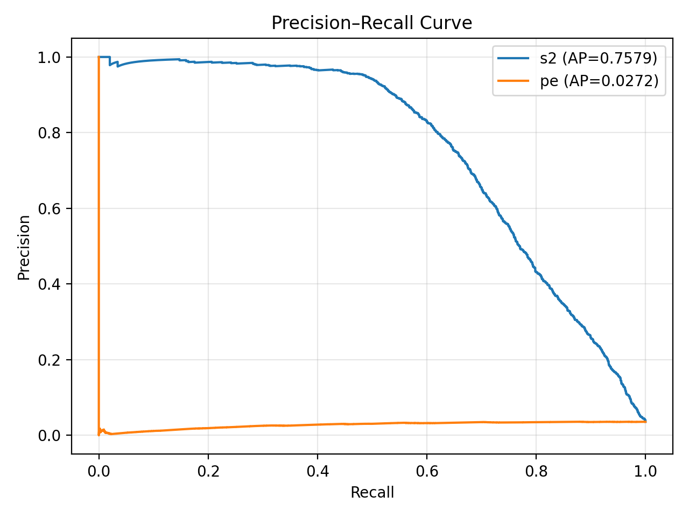

Encode geometry
Multi-scale neighborhoods capture fine and coarse structure. A geometry-aware transformer connects local features with global context.
Texas A&M University / 3D perception
Reliable geometry. Robust segmentation.
Unreliable-point filtering and part understanding in a single forward pass.
Zachry Department of Civil & Environmental Engineering
Texas A&M University
* Corresponding author
 Noisy point cloud
Noisy point cloud Comparison method
Comparison method Geometry-aware filtering
Geometry-aware filteringGhost structures can look locally plausible while being globally inconsistent. GUARD learns which geometric representations to trust.
Reliable part segmentation of scanned hard disk drives (HDDs) is an important perception requirement for automated component handling and robotic disassembly in e-waste recycling. Although point clouds provide detailed geometric information for such tasks, real scans often contain sensor noise and reconstruction artifacts, particularly ghost structures that are locally plausible yet geometrically inconsistent, making both noise removal and semantic interpretation unreliable.
We propose GUARD, a geometric uncertainty-aware framework that performs point filtering and segmentation within a single forward pass by modeling the reliability of learned geometric representations. GUARD combines a multi-scale geometric transformer with a multi-bandwidth random Fourier feature Gaussian Process to estimate per-point geometric uncertainty, complemented by predictive entropy to suppress unreliable measurements while preserving informative structures.
GUARD is primarily evaluated on 2,745 real HDD point clouds containing scanning and reconstruction artifacts. On this dataset, it improves PointNet++ segmentation mIoU from 0.7739 to 0.8318 and demonstrates robust performance across different backbones with limited parameter overhead and efficient single-pass inference. Further evaluation on ShapeNetPart and ScanNet assesses robustness and generality beyond the HDD setting, with geometric uncertainty achieving an F1 score of 0.7931 for corrupted-point detection on manually annotated ScanNet samples.
These results support the potential of geometric reliability modeling to provide robust perception for automated robotic disassembly in manufacturing and other engineering applications involving noisy point-cloud data.
A lightweight module for PointNet++, DGCNN, and Point Transformer backbones.

Multi-scale neighborhoods capture fine and coarse structure. A geometry-aware transformer connects local features with global context.
A multi-bandwidth random Fourier feature Gaussian Process measures uncertainty in geometric embeddings. Spectral normalization stabilizes learning.
Geometric uncertainty detects structural inconsistencies; predictive entropy refines ambiguous boundaries within the same forward pass.
Real scans and controlled corruptions, evaluated with the same segmentation backbones.
mIoU ↑ · higher is better
Bar axis: 0–1 mIoU. ShapeNetPart average is the paper’s reported average over synthetic corruptions, not an average across HDD and ScanNet.
| Backbone | Method | HDD | ScanNet | Ghost S1 | Ghost S5 | Global S1 | Global S5 | Local S1 | Local S5 | Avg. Ghost | Avg. Global | Avg. Local | Avg. All |
|---|
ScanNet · Point Transformer V3
| Method | mIoU ↑ |
|---|---|
| PTv3 | 0.7757 |
| PTv3 + GUARD | 0.7902 |
A 1.45 percentage-point gain on ScanNet, with approximately 0.4M additional parameters.
Base parameters + GUARD addition, in millions
| Backbone | Base | Added |
|---|---|---|
| PointNet++ | 2.2M | +0.3M |
| DGCNN | 1.9M | +0.4M |
| Point Transformer | 46.2M | +0.4M |


Original scans, PointCVaR, and GUARD outputs from the manuscript.
ScanNet reconstructions contain floating and duplicated artifacts at room scale. Highlighted regions show corruption in the original input; the corresponding filtered scene appears on the right.


Geometric uncertainty separates corrupted points more effectively than predictive entropy on the annotated ScanNet samples.
Manually annotated ScanNet samples · filtering ratio 0.9
| Measure | Precision ↑ | Recall ↑ | F1 ↑ |
|---|---|---|---|
| Predictive entropy | 0.2284 | 0.2144 | 0.2212 |
| GUARD σgeo | 0.8032 | 0.7832 | 0.7931 |
F1 score for corrupted-point detection
on the annotated ScanNet evaluation.


Component ablations on real HDD scans and a comparison of geometric uncertainty with entropy.
HDD outlier detection · higher is better
| Variant | Precision | Recall | F1 |
|---|---|---|---|
| Baseline (RFF) | 0.3358 | 0.2537 | 0.2890 |
| Without MSN | 0.9771 | 0.0953 | 0.1736 |
| Without TF | 0.7192 | 0.5979 | 0.6530 |
| Without MdRFF | 0.2851 | 0.8636 | 0.4287 |
| Without SN | 0.2108 | 0.1324 | 0.1626 |
| GUARD (full) | 0.8330 | 0.5897 | 0.6906 |
MSN: multi-scale neighborhoods; TF: transformer; MdRFF: multi-bandwidth random Fourier features; SN: spectral normalization.
ShapeNetPart · uncertainty-component ablation
| Module | Noise kept ↓ | mIoU ↑ |
|---|---|---|
| Only entropy | 16.1% | 0.7203 |
| Only GGPH | 11.7% | 0.6672 |
Geometric uncertainty provides stronger filtering, while entropy alone yields higher segmentation mIoU in this ablation.
DGCNN + GUARD scores 0.7425 mIoU versus 0.7434 for vanilla DGCNN. The paper examines how aggressive filtering can remove informative points used by local graph construction.
| Corruption | Method | S1 | S2 | S3 | S4 | S5 |
|---|---|---|---|---|---|---|
| Local | PointCVaR | 4.9 | 9.0 | 17.2 | 23.9 | 30.0 |
| Local | GUARD | 4.4 | 8.1 | 14.6 | 20.2 | 23.7 |
| Global | PointCVaR | 2.4 | 4.6 | 8.4 | 11.0 | 12.6 |
| Global | GUARD | 1.5 | 2.9 | 6.4 | 11.9 | 19.8 |
| GhostCluster | PointCVaR | 5.7 | 8.0 | 9.9 | 22.8 | 26.9 |
| GhostCluster | GUARD | 5.5 | 7.3 | 8.9 | 20.1 | 22.3 |
GUARD retains more global-noise points than PointCVaR at S4 and S5; the complete table preserves this trade-off.
The repository contains implementation, evaluation, training, and visualization instructions. The code repository is public; the full HDD dataset release is planned after publication.
GUARD_Point_denoiser on GitHubManuscript citation; publication venue and DOI are not specified in the supplied source.
@unpublished{wang_guard,
title = {{GUARD}: Geometric Uncertainty-Aware Robust
Denoiser for Point Cloud Segmentation},
author = {Wang, Zuoxu and Liang, Xiao},
note = {Manuscript},
url = {https://github.com/001-Wang/GUARD_Point_denoiser}
}